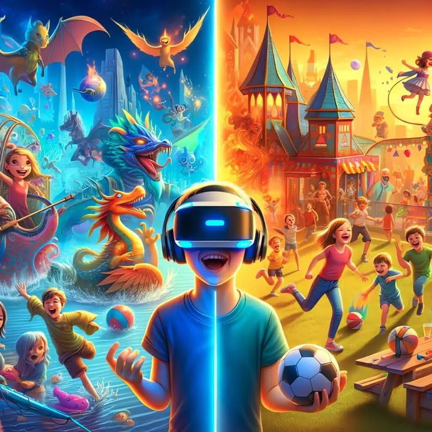
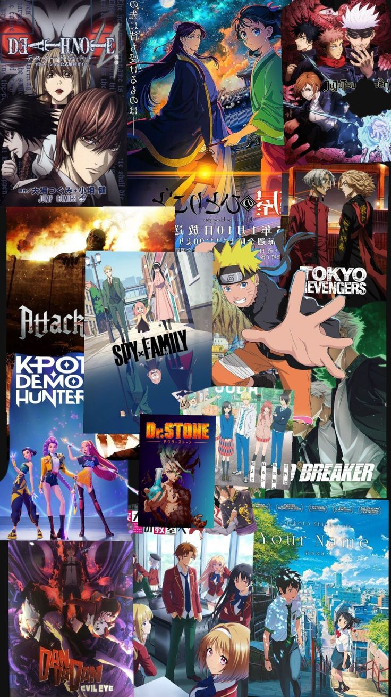

Vibrations Musicales
Tant que j'aime le son ça me plais
J'aime créer des ambiances sonores uniques et structurer des morceaux.
Au-delà du code, voici les univers qui m'inspirent, me détendent et nourrissent ma créativité au quotidien.


